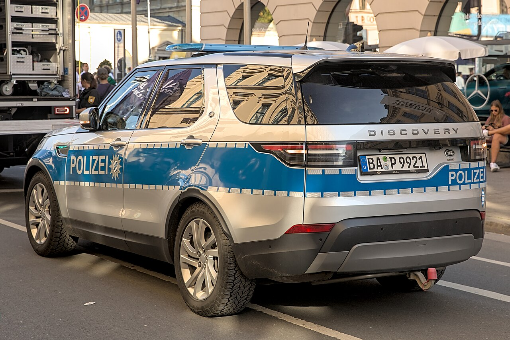
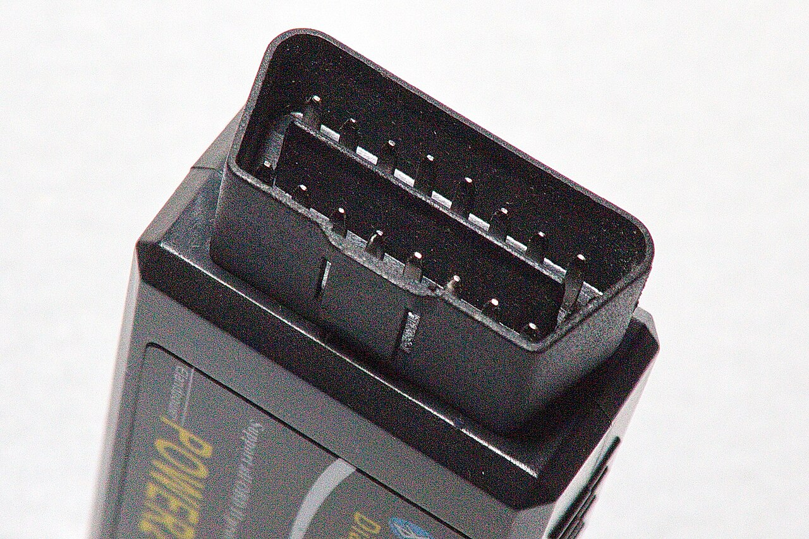
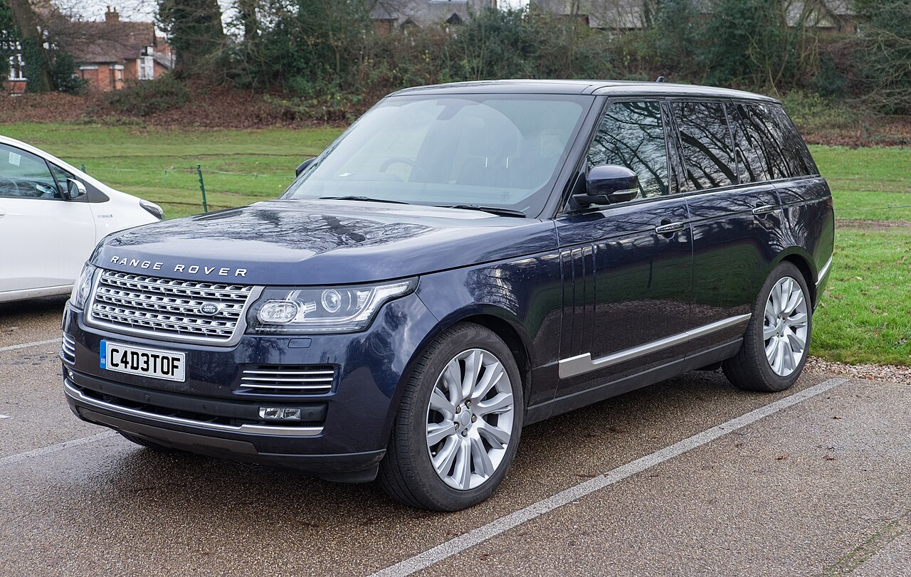
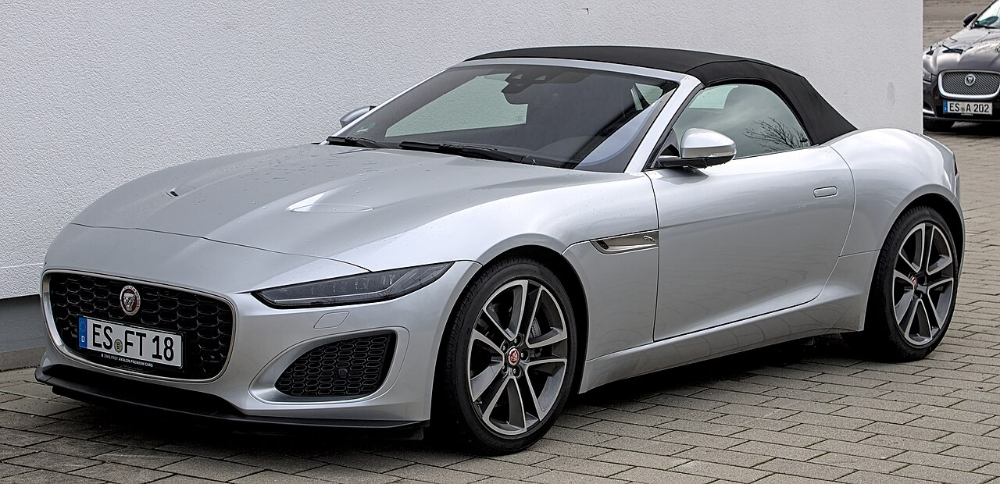

Land Rover series
Defender, Discovery and Range Rover.
Land Rover, Range Rover and Jaguar specialist repairs and maintenance in Johannesburg.
Book your car

From routine maintenance to major repairs, our comprehensive auto services have got you covered. Our expert technicians provide oil changes, tyre rotations, engine tune-ups, transmission repairs and more. We will work with you to create a maintenance plan that suits your vehicle and your budget.
Call us today: (087) 702 9713
Book your service nowWe are Land Rover and Range Rover specialists with in-depth knowledge and expertise to keep your vehicle in top shape.

Modern Land Rover and Jaguar vehicles need modern equipment. Our diagnostic tools help us find problems quickly and accurately, so we can fix the right thing the first time.


Defender, Discovery and Range Rover.

Including Sport, Velar and Evoque.

Including XE, XF, XJ, E-Pace and F-Type.
Precision repairs and maintenance, driven by passion and a commitment to excellence.
Book your car online Call (087) 702 9713